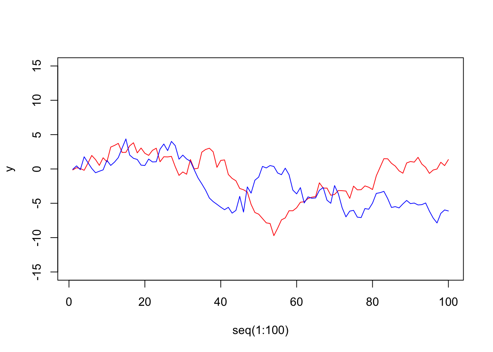
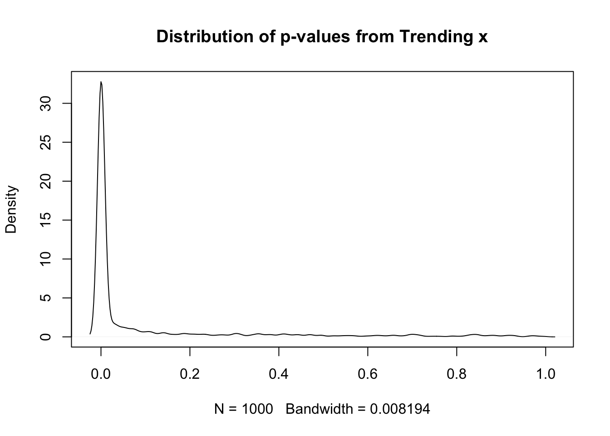

An Example of Time Series Troubles
Let me do this with a relatively simple regression. Two variables:
\[ y = \alpha + \beta x + \epsilon \]
Both are generated randomly. Here’s a basic plot.
y <- cumsum(rnorm(100))
x <- cumsum(rnorm(100))
plot(x=seq(1:100), y=y, type="l", col="red", ylim=c(-15,15))
lines(x=seq(1:100), y=x, col="blue")
Each time series contains 100 observations. Because both x and y are random, the slopes should be 0, 95% of the time with 95% confidence because there is no underlying relationship. In practice, let’s look at the distribution of p-values for the probability of no relationship.
SR <- function(n) {
Results <- NULL
for(i in 1:n) {
y <- cumsum(rnorm(100))
x <- cumsum(rnorm(100))
Result <- summary(lm(y~x))$coefficients[2,4]
Results <- append(Result,Results)
}
Results
}I replicate the process of random x and random y 1000 times and show the p-values below. Because they are random, approximately 95% should be greater than 0.05.
Res1 <- SR(1000)
plot(density(Res1), main="Distribution of p-values from Trending x")
In practice,
table(Res1 > 0.05)
FALSE TRUE
752 248 The above table should show about 950 TRUE and 50 FALSE but because each is trended and they share variation from trend, the actual frequency of rejecting the claim of no relationship is far more common than 5%.